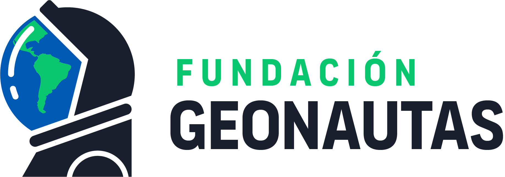

Science communication
Outreach
I'm co-founder and president of Fundación Geonautas, and active in women-in-science, JEDI (Justicia, Equidad, Diversidad e Inclusión), and science-communication work — including regular appearances on Canal TVU (Universidad de Concepción's TV channel) and other media.

Looking for media appearances? Use the filters below — the ● amber dot marks Canal TVU appearances specifically.
Watch
Recorded talks & interviews
YouTube — drag or use the arrows to browse.
Listen
Podcast episodes
Spotify — drag or use the arrows to browse.
Reels
Instagram Reels
Drag or use the arrows to browse.
News & media